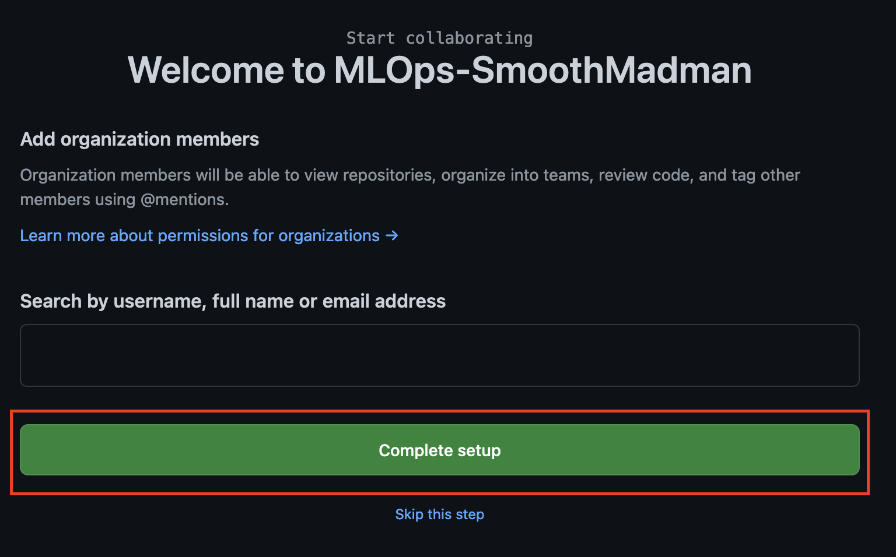
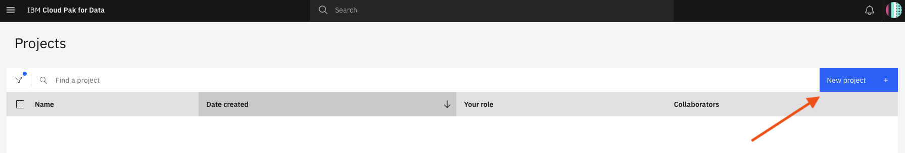
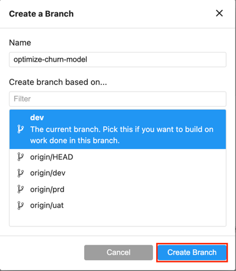
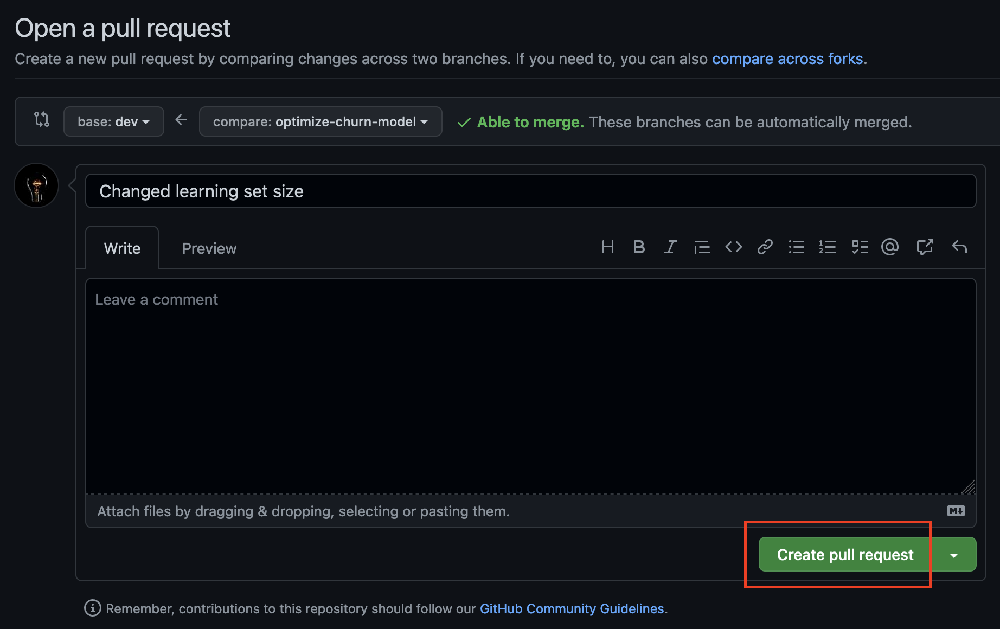

2. MLOps CI/CD
Introduction
As organizations scale adoption of AI models in production, it becomes more important to automate the process for testing, validating, and promoting such models from dev (development) to uat (user acceptance testing, also known as pre-prod, quality assurance or staging) to prd (production) environments.
To enable such automation, it is important to be able to validate and monitor the performance of AI models (fairness, quality, drift, explainability) as well as automate the process of propagating the models and associated assets from one environment to another. A typical scenario for developing and promoting AI models includes the following sequence:
-
Data scientists explore multiple algorithms and techniques to train best performing AI model.
-
Once satisfied with performance results, data science lead deploys the best performing model to a Pre-Prod deployment space.
-
MLOps team configures Watson OpenScale to monitor and run validation tests against the model deployed in Pre-Prod space.
-
Once model validation is approved, MLOps team propagates model from Pre-Prod to Prod.
-
MLOps team configures Watson OpenScale to monitor the production model for fairness, quality and drift.
In this workshop, we cover two common approaches for implementing a governed MLOps methodology to enable the automation of propagating models from development through user acceptance testing (PreProd) to production:
-
Propagating data science assets including trained models from one environment to another.
-
Git based automation where data assets and source code are checked into a git repository, git integration is leveraged for code management, and automation is leveraged for testing and validation in UAT (PreProd) and production environments.
Choosing which of these approaches to implement is mostly dictated by the use case and the preferred method of governance that an organization chooses to adopt. In this workshop, we highlight both approaches and how they can be implemented using Cloud Pak for Data.
Before diving into the details of these approaches, it is helpful to quickly review the overall data science process and various tasks/activities performed by the data science team.
Initially, data science team engages with business stakeholder to discuss the business problem to be addressed. After understanding and scoping the business problem, data scientists search and find data assets in the enterprise catalog that may be relevant and useful for training AI models to address the identified business problem.
Data scientists experiment with various data visualizations and summarizations to get a sound understanding of available data. This is because real-world data is often noisy, incomplete, and may contain wrong or missing values. Using such data as-is can lead to poor models and wrong predictions.
Once relevant data sets are identified, data scientists commonly apply “Feature Engineering” which is the task of defining and deriving new features from existing data features to train better-performing AI models. The feature engineering step includes aggregation and transformation of raw variables to create the features used in the analysis. Features in the original data may not have sufficient predictive influence and by deriving new features, data scientists train AI models that deliver better performance.
Afterwards, data scientists train machine learning models using the cleansed data prepared in the previous steps. Data scientists train several machine learning models, evaluate them using a holdout data set (data not used at training time) and select the best model or multiple models (ensemble) to be deployed in the next phase. Model building usually also includes a hyperparameter optimization step, which aims at selecting the best set of model hyperparameters (i.e. parameters of the model itself), which are set before training starts to further increase model performance
After data scientists build (train) an AI model that meets their performance criteria, they make that model available for other collaborators, such as software engineers, other data scientists, and business analysts, to validate (or quality test) the model before it gets deployed to production.
Once a model has gone through the iterations of development, build, and test, the Machine Learning Operations (or MLOps) team deploys the model into production. Deployment is the process of configuring an analytic asset for integration with other applications or access by business users, to serve production workload at scale. Two most popular types of deployment are:
-
Online: a real time request/response deployment option. When this deployment option is used, models or functions are invoked with a REST API. A single row or multiple rows of data can be passed in with the REST request.
-
Batch: a deployment option that reads and writes from/to a static data source. A batch deployment can be invoked with a REST API.
Keep in mind that in a hybrid multi-cloud world, development (dev), user-acceptance testing (uat), and production (prd) environment can be on-prem or in one of different cloud platforms. For example, the development environment can be hosted in a cloud platform but the production environment can be on-prem. Alternatively, the user acceptance testing environment can be on-prem while the production environment can be hosted on a public cloud platform.
For some background on the model development and deployment in the AI Lifecycle Management process, please review the white paper or check the following blogs:
Additionally, please review the Jenkins + IBM Cloud Pak for Data == Production-ready Delivery Pipelines for AI blog to learn how to leverage cpdctl and Jenkins to design pipelines to enable automation in propagating AI models to production.
Lastly, the following lab in this workshop shows how to use Watson Studio Pipelines to simplify the overall MLOps process by better orchestration of the various stages required for developing robust AI models.
Exercise 1 – AI Model Propagation across Environments
Introduction
In this section, we illustrate the first approach leveraging cpdctl, a Cloud Pak for Data CLI (command line interface) tool, to automate the process of propagating trained models from one environment to another.
In practice, the environments can exist in the same Cloud Pak for Data cluster or in completely different Cloud Pak for Data clusters hosted on different cloud platforms. For this lab, we will use the same Cloud Pak for Data cluster and illustrate how to use the cpdctl tool to propagate assets from the quality assurance (QA, also known as user acceptance testing) deployment space to the production deployment space. The process is identical to how you’d propagate models from one cluster to another as the cpdctl tool is designed to handle the hybrid multi-cloud seamlessly.
Using cpdctl in a Notebook
You will run a notebook to leverage cpdctl to copy assets from churnUATspace to churn_prod_space.
-
Navigate to your Customer Churn Prediction project.
-
On the project page, click the Assets tab, then New Asset and select Jupyter notebook editor.
-
On the New notebook page, click the Local file tab and then browse to find the notebook file CopyAssets_DeploymentSpace1_to_DeploymentSpace2.ipynb that you downloaded at the beginning of the workshop. Then click Create.
IMPORTANT
DO NOT RUN THE NOTEBOOK YET
-
The notebook will load in edit mode. DO NOT RUN THE NOTEBOOK YET, you must change some variable values to customize the environment URL and your Model Name. Go to the cell shown below:
You need to set the values of these variables by changing the values in red. Use the following values and keep the single quotes:
-
SOURCE_CPD_USERNAME: Your workshop username
-
SOURCE_CPD_PASSWORD: Your workshop password
-
SOURCE_CPD_URL: The URL that you use to access the CP4D workshop environment. The following is just an example:
https://cpd-cpd.apps.ocp-663004oi6y-lgmy.cloud.techzone.ibm.com
-
TARGET_CPD_USERNAME: Your workshop username
-
TARGET_CPD_PASSWORD: Your workshop password
-
TARGET_CPD_URL: In this case, you're going to promote models between deployment spaces in the same environment. Therefore, use the same value as in the previous SOURCE_CPD_URL
-
SOURCE_DEPLOYMENT_SPACE_NAME: churnUATspace
-
TARGET_DEPLOYMENT_SPACE_NAME: churn_prod_space
-
TARGET_MODEL_NAME: <YourUser>_ChurnPredictionProd
This is an example for user0:
-
-
Now run all the steps in the notebook. No error should be shown.
Checking the Production model
-
Go to the Deployments menu to check that the model has been promoted to Production.

-
On the Deployments page, click the Spaces tab and select the churn_prod_space.
-
Go to the Deployments tab and click on the production deployment <YourUser>_ChurnPredictionProd.
-
Click the Test tab. You're going to test the deployed model with some data. Go to the section JSON and introduce the following data:
Warning
Use the Copy button in the following code section to keep the right format when pasting it.
Tip
Feel free to edit/change values and re-run the prediction to see how different features can impact the prediction.
{ "input_data": [ { "fields":["ID","LONGDISTANCE","INTERNATIONAL","LOCAL","DROPPED", "PAYMETHOD","LOCALBILLTYPE","LONGDISTANCEBILLTYPE","USAGE","RATEPLAN", "GENDER","STATUS","CHILDREN","ESTINCOME","CAROWNER","AGE"], "values":[[1,28,0,60,0,"Auto","FreeLocal","Standard",89,4,"F","M",1, 23000,"N",45]] } ] }Then click Predict.
-
The prediction for this input data is shown.
Info
At this point you’ve seen how to run a notebook leveraging cpdctl tool to propagate assets from one deployment space to another. You can create and schedule a job to run periodically and execute this sample notebook.
Exercise 2 – Git-based Flow
Introduction
In this part of the workshop, we are going to use Git based automation where data assets and source code are checked into a git repository for source code management, and automation is leveraged for testing and validation in UAT and production environments. Effectively we are propagating source code only and training and deploying models in each of the environments based on the notebooks.
Git-based deployment flow:
The figure above illustrates a typical deployment process of AI models following a governed MLOps methodology applied through Git integration. Typically, the enterprise would have separate clusters or namespaces (depending on isolation needs) to support the various stages of development (training / developing), validation (evaluation/pre-production) and deploying AI (production) models. Figure 1 depicts three git branches: dev (development), uat (user-acceptance testing), and prd (production) that correspond to the development, pre-production, and production clusters.
Data scientists mainly operate in the development cluster and interact with the git dev branch. Data scientists leverage the development cluster for experimentation and exploration where they collaborate with other data scientists, data engineers, and business SMEs to identify the right data sets and train the best performing AI models.
As denoted in the figure, there are typically multiple forks off the dev git branch to add features for improving the AI model. Once satisfied with the AI model that delivers best performance, data scientists check the code and assets into the git dev branch via pull requests. The data science project lead, who owns the dev git branch, approves the submitted pull requests and tests the notebook and model.
After review (and there could be a few back-and-forth interactions), the lead data scientist would create a pull request (sometimes also referred to as merge request) to propagate the assets (notebooks) to the uat git branch for testing in the UAT environment, which typically references different data stores than the DEV environment.
Deployment of the assets in the UAT environment (from the uat branch) is typically done via automation, also known as GitOps. A general policy in many organizations mandates that deployment of applications, which includes data science assets, is always fully automated without human intervention. First, this helps to streamline the processes but moreover, it reduces the risk of failing installations because the exact same process is executed in multiple stages before it reaches production.
Automation would pull the assets from the uat git branch into the pre-production cluster to retrain the AI model and run validation testing against such model. The data used for validation is different from the data used for training and initial testing of the AI model. Validation is executed on the data assets in the uat branch.
Once UAT validation tests are concluded, the final assets (code and data assets) are checked into production git branch via a pull request. The MLOps team lead reviews and approves the pull request to propagate the assets into the production git branch. Automation would pick up the assets from the production git branch and push those into the production cluster where the code is run to re-train the AI model and validate the performance. Assuming all performance checks meet expected targets, the model is deployed in the production cluster and is ready for inferencing at scale.
Preparing the Git environment
Info
We have already prepared a Git repository that consists of 3 branches: prd (production), uat (UAT) and dev (development): https://github.com/CP4DModelOps/mlops-churn-prediction.
In this exercise you will create a fork of this repository to your own GitHub organization which you will create.
-
Go to https://github.com and login. If you don't have a Github account, you can create one for free.
-
Click on your user at the right top of the screen and go to Settings
-
Click Organizations in the left-side menu, then New organization.
-
Click Create a free organization.
-
Enter the Organization account name, for example “MLOps-<your_full_name>”. The name must be unique so you may have to be creative. Also enter your e-mail address. Select My personal account, Verify that you're human, accept the terms, then click Next
-
On the next screen, just click “Complete Setup” and then “Submit”

Info
Now you have a new github.com organization which you can use to fork the training repository.
-
Go to https://github.com/CP4DModelOps/mlops-churn-prediction and click the Fork button at the right top of the page.
-
Select the organization you just created from the list and uncheck the option "Copy the prd branch only". Then click Create fork
-
GitHub will fork the repository and then show it. Click the area that says 3 branches and check that you have 3 branches: prd (default), uat and dev.

Info
We will now set up a branch protection rule to simulate a “real” scenario where pull requests have to be approved before being merged.
-
Click on Settings and then Branches on the left-hand side. You will see that there are no branch protection rules have been set up yet. To protect the uat and prd branches we will create these rules. Click Add branch protection rule
-
Create a new rule for the uat branch. Enter uat for the Branch name pattern and select the Require a pull request before merging checkbox.
also scroll down and select the Restrict who can push to matching branches checkbox. Then click Create:
-
Repeat the above steps for the prd branch.
-
When done you should see the following branch protection rules:
Info
As your organization only has a single user (yourself) and you are the administrator, we cannot truly set up a formal approval process in which data scientists only have write access to the repository and the MLOps staff can approve requests. In an actual implementation, the production branch could also reside in an upstream repository with different permissions. Setting up the GitHub topology with different repositories and teams is beyond the scope of this workshop.
Watson Studio integration
Now that you have finished creating your repository, we can start integrating it with Watson Studio in Cloud Pak for Data. Watson Studio needs to be given access to your repository via a token.
-
Click on your user at the right top of the page and select Settings.
-
Scroll down until you see Developer settings in the left sidebar and click on it.
-
Click on Personal access tokens > Tokens (classic) then Generate new token > Generate new token (classic).
-
Enter the name of the token and ensure the repo box is checked. Then scroll down and click Generate token.
-
The token is displayed only once; make sure you copy it. You will need it multiple times during the following steps.
Info
In IBM Cloud Pak for data, a project is how you organize your resources to achieve a particular goal. A project allows for high-level isolation, enabling users to package their project assets independently for different use cases or departments. Your project resources can include data, collaborators, scripts, and analytic assets like notebooks and models.
Creating a Git-enabled project
-
Go to All projects by clicking on the Navigation menu and selecting Projects > All projects.
-
Click on New project to create a new project.

-
Select the Create a project integrated with a Git repository option.
-
On the New project page, provide the Name <YourUser>-mlops-dev and. For integration type, select the Default Git integration. You will need to upload the GitHub token you generated before token to connect to your Git repository. Click the New Token link.
-
On the Git integration pop-up, select Github, provide your git access token and give it a name for reference: <YourUser>-mlopstoken. Click Continue.
-
Next click the token drop down and select the token you created <YourUser>-mlopstoken.
-
Next step is to provide the GitHub repository and branch to associate with your project.
Warning
The rest of the instructions in this module reference the following repository: https://github.com/MLOps-DataScience/mlops-churn-prediction but you will reference your own repository you forked from the upstream repository.
For the Repository URL field, provide HTTPS reference for your Git repository. You can copy this by clicking on the Code button in the Code tab, then then the Copy button indicated by the red arrow below.
-
Go back to your Create project window and paste the URL in the Repository URL field. Then, set teh Branch field to dev. Click Create.
-
You should see a pop-up message stating that the project is created successfully. Click on the View new project link to navigate to the new project.
Warning
If the completion windows does not show up after about 5 minutes, refresh the page and check if the project was cloned successfully.
-
Take a few minutes to review the project information. The Overview tab provides general information about the project like Date created, the Collaborations, and Storage used. Click the Manage tab.
-
Click Access Control option to review which users have access to the platform. In this case, you're the only collaborator in this project.
Tip
You can add other users or user groups and assign them the relevant permissions to collaborate on this project. Typically, a data science project involves multiple users and roles who collaborate on developing and evaluating AI models.
-
Click the Assets tab to review the assets associated with the project. Only the CUSTOMER_DATA_ready.csv file is shown as an asset. Notebooks and other data assets can be found from the JupyterLab interface.
-
Now you can start working with JupyterLab IDE in this Git-integrated project. Click on the Launch IDE link at the top of the page and select JupyterLab.
-
On the panel that shows up, select JupyterLab with IBM Runtime 23.1 on Python 3.10 and click Launch.

-
Once JupyterLab has started, take some time to look at the different areas of the workpace:
-
On the far-left side (marked with a red box) you can browse the folder contents, view the active kernels and other tabs and view the Git repository state such as current branch and any changes that have already been done.
-
Also on the left-hand side (annotated with a blue box) you see the “root” folder of the repository with the assets folder. This is the folder where the input files and notebooks are held.
-
The middle part (marked by an amber box) is used to create new notebooks, open an Python console, a shell terminal and a few other applications.

-
-
In this exercise, you are going to make a change to an existing notebook. First, make sure we make the changes in a “feature” branch so that can validate the changes without changing the notebook that may be used by other team members.
Click on the Git icon at the far left as indicated by the red arrow.
Info
You will see multiple branches in the current Git project (dev, origin/HEAD, origin/dev, origin/uat and origin/prd) and your current branch is dev.
-
Click Current branch to show all branch options, then create a new branch by clicking the New Branch button.
-
A new window appears in which you can enter the name of the new branch. Use optimize-churn-model name. Then click Create Branch.

-
Click the folder icon, then vavigate to the folder assets/notebooks. Then, open the customer-churn-prediction.ipynb notebook by double-clicking it.
-
Scroll down to the section above Evaluate and notice the accuracy of the model. This is currently approximately 0.92.
-
Scroll up to where the data is split and change the test_size from 0.4 to 0.2.
-
Save the notebook by clicking the disk at the top left of the notebook.
Info
In a real scenario, the Data Scientist would run the notebook to check the accuracy of the model and validate that the change was positive.
-
Assume that you’ve run the notebook and you're happy with the change results and you wish to promote the model to the dev environment. Open the Git panel.
Note that the notebook you changed appears in the list of “Changed” files:
-
Click on the notebook and then on the “+” sign to stage the change for commit.
The notebook will now appear in the list of “Staged” files.
-
Enter a meaningful message in the “Summary” field and click the Commit button.
-
The change is still only local to JupyterLab. To make it available in the Git repository, you need to synchronize. Click on the cloud button to push the changes to the remote repository.
-
You can now go to your repository on GitHub, refresh the page and select the new branch that you created. Then, click 1 commit ahead.
-
As you want the data science lead to review your changes, create a pull request. Please pay attention to ensure you are creating a pull request for your own repository. You will find that GitHub assumes you want to create a pull request to the upstream repository (CP4DModelOps/mlops-churn-prediction). Set the base repository box to your own repository.
Select the dev branch of your own.
-
GitHub indicates that it is able to merge the changes automatically(Able to merge). Click the Create pull request button to request the changes to be merged into the dev branch.
Then click Create pull request again.

Info
In a real-case scenario, the Data Scientist lead would receive an e-mail informing that a pull request is ready to be reviewed. The next steps would be carried out by them.
-
Let's approve and merge the pull request. Click on the Pull requests link at the top. You will see a list of all pull requests Click the pull request to open it.
-
See that the request consists of 1 commit and only 1 file was changed. Click on the Files changed box to see the details of what was changed.
The file is not nicely formatted as a notebook but it is quite easy to identify the changes that have been made. If wanted you can click on the ellipses indicated by the red oval and select View file to display the file in a notebook format.
Info
The data scientist lead is happy with the changes and will now approve and merge the changes to the dev branch. As we only have one user for this repository, we cannot approve our own pull request. Normally, the lead data scientist would use the Review changes button to approve the request.
-
Click your browser’s “back” button to go to the pull request.
-
Go back to the Pull Request. Then click the Merge pull request button to merge the changes with the dev branch.
Then, click Confirm merge.
GitHub confirms that the pull request has been successfully merged and closed. As a good practice to keep the repository clean, delete the branch by clicking the Delete branch button.

-
Now the dev branch has been updated with the change. This is how MLOps works with the git integration. Next steps would be to promote the change to the UAT and Production branches, and to deploy the model to each correspondent Deployment Space.
-
Go to your Cloud Pak for Data window. Log off as the datascientist user and log in as the data scientist lead (dslead user) and navigate to the mlopsdev project. Open it and start JupyterLab like you did before.
Info
You've reached the end of this lab.